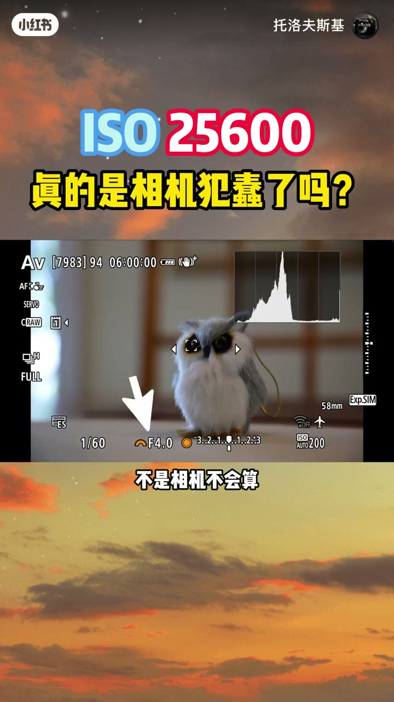
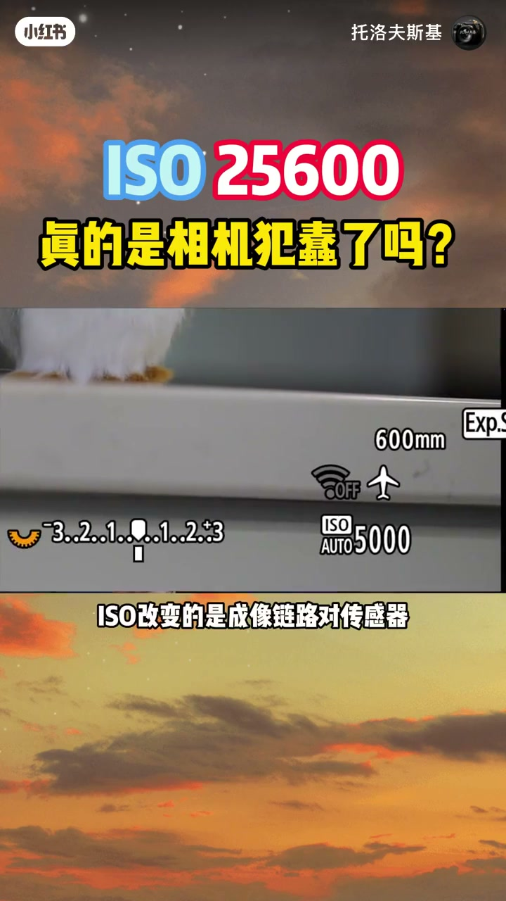
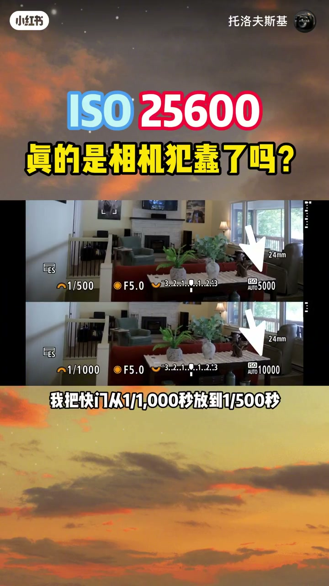
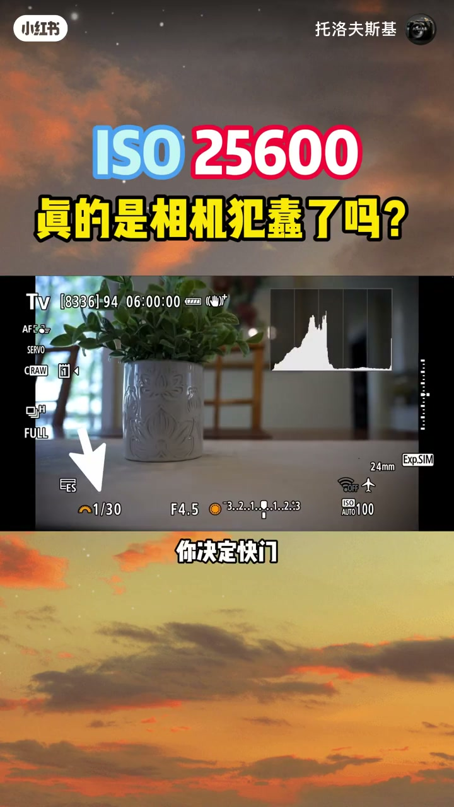
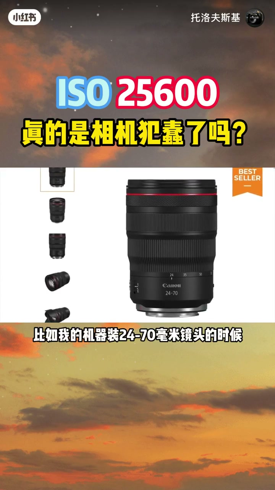
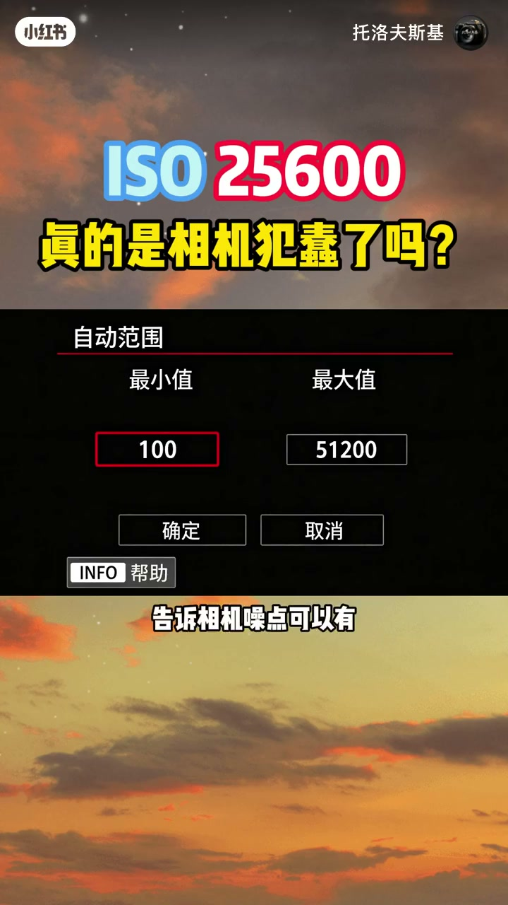
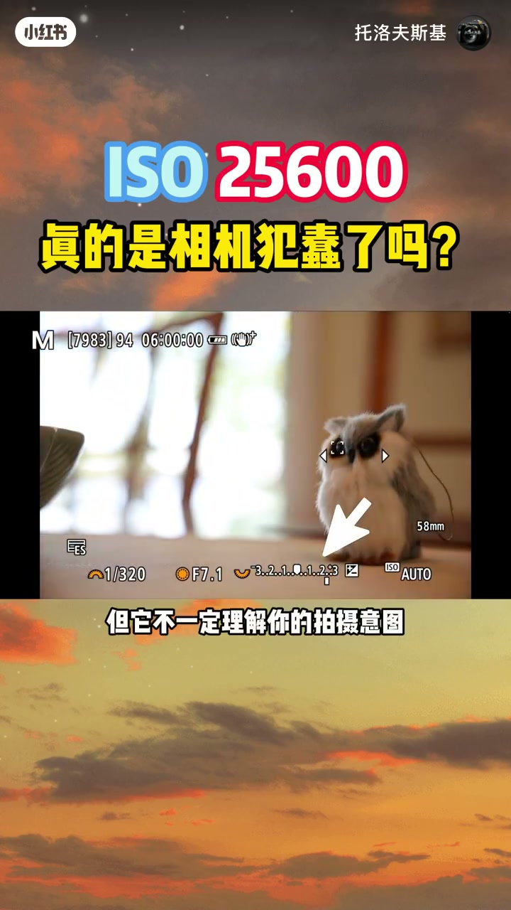
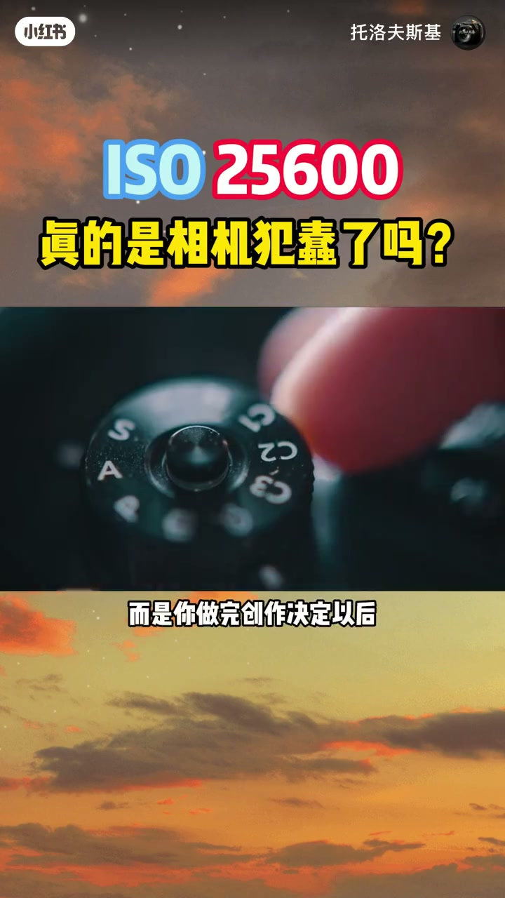

内容要点
「ISO 25600，真的是相机犯蠢了吗？」教程要点：你拍鸟,快门射1600分之一秒,光圈射F9,结果相机直接给你ISO25600,你第一反应是什么? → 这自动ISO也太蠢了吧,但我们今天就算一笔账,在这个光线条件下,你坚持1600分之一秒和F9,相机其实根本没有别的选择。 → 不是相机不会算,是你给它出的题根本没有DISO的答案。 → 先别急着记ISO是什么,你真正要搞懂的是相机到底在替你解决什么问题。；详见正文。
知识结构
你拍鸟,快门射1600分之一秒,光圈射F9,结果相机直接给你ISO25600,你
那不同曝光模式其实就是谁决定什么的分配不同。
第一个,最高ISO,这是你的画质底线。
- 你拍鸟,快门射1600分之一秒,光圈射F9,结果相机直接给你ISO25600,你第一反应是什么?
- 这自动ISO也太蠢了吧,但我们今天就算一笔账,在这个光线条件下,你坚持1600分之一秒和F9,相机其实根本没有别的选择。
- 不是相机不会算,是你给它出的题根本没有DISO的答案。
- 先别急着记ISO是什么,你真正要搞懂的是相机到底在替你解决什么问题。
- 拍照的时候你其实在做三个决定,光圈,决定你要多少景深,多少虚化,快门,决定你要冻结动作还是拖动残影。
你拍鸟,快门射1600分之一秒,光圈射F9,结果相机直接给你ISO25600,你第一反应是什么?
00:00–02:03你拍鸟,快门射1600分之一秒,光圈射F9,结果
你拍鸟,快门射1600分之一秒,光圈射F9,结果相机直接给你ISO25600,你第一反应是什么?；这自动ISO也太蠢了吧,但我们今天就算一笔账,在这个光线条件下,你坚持1600分之一秒和F9,相机其实根本没有别的选择。；不是相机不会算,是你给它出的题根本没有DISO的答案。；先别急着记ISO是什么,你真正要搞懂的是相机到底在替你解决什么问题。；拍照的时候你其实在做三个决定,光圈,决定你要多少景深,多少虚化,快门,决定你要冻结动作还是拖动残影。；ISO,当前面两个创作要求确定以后,剩下的曝光缺口怎么补。；在数码相机里,ISO设置可以理解为成像链路中的增益相关设置,它并不会增加镜头真正进入传感器的光亮。；真正决定进光亮的是光圈,快门和现场光线。ISO改变的是成像链路对传感器信号的增益和最终亮度呈现。；所以自动ISO真正智能的地方不是它知道什么ISO最好,而是你把创作参数定下来以后,它帮你把曝光补齐。；它不是在替你做创作决定,它是在替你做算数。；这就是为什么我常年用M档加自动ISO。；如果我拍鸟,我决定1600分之一秒,因为鸟可能随时飞。；如果我要景深,我决定F8,因为我要鸟和背景都清楚。；那ISO呢?ISO就别让我每隔几秒再拧一次了。；光线在变,树叶在挡光,鸟在移动。；我只管按快门,ISO让相机自己补,给你看个实验。；现场光线固定,M档加自动ISO。；我把快门从一千分之一秒放到五百分之一秒,近光多了一档,ISO立刻降一档。；光圈也一样,F4开到F8,近光少了两档,ISO升两档。；F8收回F4,ISO降回来。；你看,相机不是在选ISO,它是在补你留下的曝光缺口。；你每动一次创作参数,它就跟着算一次。


02:03–03:41那不同曝光模式其实就是谁决定什么的分配不同。
那不同曝光模式其实就是谁决定什么的分配不同。；对我来说,M档加自动ISO是最直接的一种分工。；你管创作,相机管曝光。；M档加自动ISO,你决定快门和光圈,相机决定ISO。；A档加自动ISO,你决定光圈,相机决定快门和ISO。；S档加自动ISO,你决定快门,相机决定光圈和ISO。；真正容易出问题的是A档。；因为你决定了光圈,相机需要决定快门。；但快门不能无限慢,慢了就糊。；所以当光圈变暗,相机会先把快门降到一个他认为安全的底线,然后ISO就开始涨了。；这就是为什么很多人用A档加自动ISO,总觉得ISO莫名其妙就高了。；所以A档加自动ISO最重要的一个设置就是最低快门。；它的作用是告诉相机画质可以降,但快门不能慢到把主体拍糊。；你可以手动设一个值,比如125分之1秒。；也可以设为自动,让相机根据镜头焦距给一个参考值。；比如我的机器装24到70毫米镜头的时候,最低快门参考大概在60分之1秒左右。；如果你的相机支持根据焦距自动调整最低快门,装上长焦后这个值会明显提高。；比如我换上600毫米镜头,最低快门参考就会到600分之1秒甚至更高。；但注意,焦距倒数只能算一个起点,不是绝对安全线。；现在机身防抖,镜头防抖,主体是不是在动,你手持稳不稳,都会改变实际需要的快门速度。；而且不同品牌不同机型的自动最低快门逻辑也不一样,拿你自己的机器试一下最靠谱。；讲到这里,其实自动ISO的控制逻辑就很清楚了,你给它装三个防护栏就行。


03:43–05:31第一个,最高ISO,这是你的画质底线。
第一个,最高ISO,这是你的画质底线。；告诉相机,噪点可以有,但不能超过我能接受的范围。；最高ISO,不要迷信一个固定数字。；你可以先从全画幅12800,APS-C画幅6400这类区间开始测试。；再根据自己相机的噪点表现和最终输出需求调整。；这个ISO下即使有噪点,通常也还有后期处理空间。；相比快门不够把主体拍糊,我更愿意优先保证清晰。；第二个,最低快门,刚才讲过了,这是你的模糊风险底线。；第三个,曝光补偿,这是修正测光偏差用的。；相机的特光系统会结合亮暗分布,色彩和场景识别算一个它认为合理的曝光基准。；但它不一定理解你的拍摄意图。；比如逆光拍鸟,它很容易把鸟拍暗。；如果你的机型支持在当前模式下对自动ISO进行曝光补偿,往正方向调一点,主体就亮了。；这三个互联设好,自动ISO就不是开了就不管的傻瓜功能,而是一个有边界可控的工具。；回到最开始那个问题,1600分之一秒,F9,ISO,25600,真的是相机蠢吗?；不是,是你先做了两个创作决定,我要这么快的快门,我要这么大的谨慎,然后把剩下的曝光怎么补这个问题丢给了相机。；相机只是诚实的算出了答案。；自动ISO不是相机替你做决定,而是你做完创作决定以后,相机替你完成曝光计算。；现在,参数不是越多越专业,真正专业的是知道该把什么决定留给自己,把什么决定交给相机。；不过我也想问你一个问题,你平时最不放心把哪个参数交给相机,快门,光圈,还是ISO?；我想看看大家最不信任相机的到底是哪一步。




口述/画面要点（40段）
结合 Whisper medium 与画面大字整理；专有名词已校对。
你拍鸟,快门射1600分之一秒,光圈射F9,结果相机直接给你ISO25600,你第一反应是什么?
这自动ISO也太蠢了吧,但我们今天就算一笔账,在这个光线条件下,你坚持1600分之一秒和F9,相机其实根本没有别的选择。
不是相机不会算,是你给它出的题根本没有DISO的答案。
先别急着记ISO是什么,你真正要搞懂的是相机到底在替你解决什么问题。
拍照的时候你其实在做三个决定,光圈,决定你要多少景深,多少虚化,快门,决定你要冻结动作还是拖动残影。
ISO,当前面两个创作要求确定以后,剩下的曝光缺口怎么补。
在数码相机里,ISO设置可以理解为成像链路中的增益相关设置,它并不会增加镜头真正进入传感器的光亮。
真正决定进光亮的是光圈,快门和现场光线。ISO改变的是成像链路对传感器信号的增益和最终亮度呈现。
所以自动ISO真正智能的地方不是它知道什么ISO最好,而是你把创作参数定下来以后,它帮你把曝光补齐。
它不是在替你做创作决定,它是在替你做算数。
这就是为什么我常年用M档加自动ISO。
如果我拍鸟,我决定1600分之一秒,因为鸟可能随时飞。
如果我要景深,我决定F8,因为我要鸟和背景都清楚。
那ISO呢?ISO就别让我每隔几秒再拧一次了。
光线在变,树叶在挡光,鸟在移动。
我只管按快门,ISO让相机自己补,给你看个实验。
现场光线固定,M档加自动ISO。
我把快门从一千分之一秒放到五百分之一秒,近光多了一档,ISO立刻降一档。
光圈也一样,F4开到F8,近光少了两档,ISO升两档。
F8收回F4,ISO降回来。
你看,相机不是在选ISO,它是在补你留下的曝光缺口。
你每动一次创作参数,它就跟着算一次。
那不同曝光模式其实就是谁决定什么的分配不同。
对我来说,M档加自动ISO是最直接的一种分工。
你管创作,相机管曝光。
M档加自动ISO,你决定快门和光圈,相机决定ISO。
A档加自动ISO,你决定光圈,相机决定快门和ISO。
S档加自动ISO,你决定快门,相机决定光圈和ISO。
真正容易出问题的是A档。
因为你决定了光圈,相机需要决定快门。
但快门不能无限慢,慢了就糊。
所以当光圈变暗,相机会先把快门降到一个他认为安全的底线,然后ISO就开始涨了。
这就是为什么很多人用A档加自动ISO,总觉得ISO莫名其妙就高了。
所以A档加自动ISO最重要的一个设置就是最低快门。
它的作用是告诉相机画质可以降,但快门不能慢到把主体拍糊。
你可以手动设一个值,比如125分之1秒。
也可以设为自动,让相机根据镜头焦距给一个参考值。
比如我的机器装24到70毫米镜头的时候,最低快门参考大概在60分之1秒左右。
如果你的相机支持根据焦距自动调整最低快门,装上长焦后这个值会明显提高。
比如我换上600毫米镜头,最低快门参考就会到600分之1秒甚至更高。